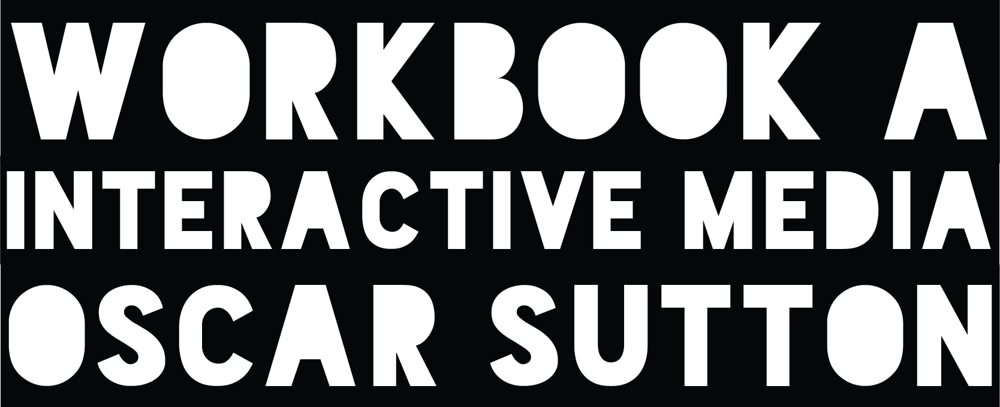
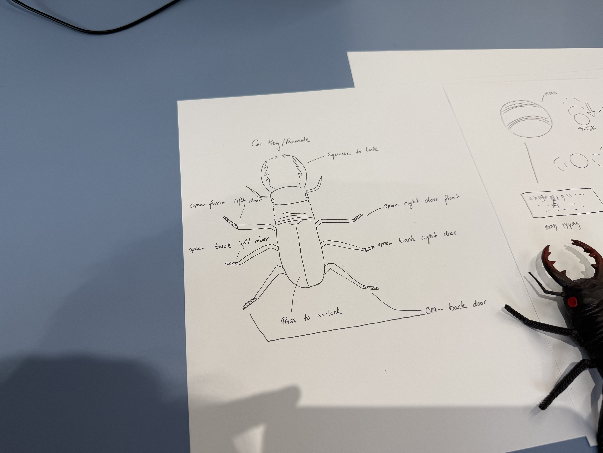
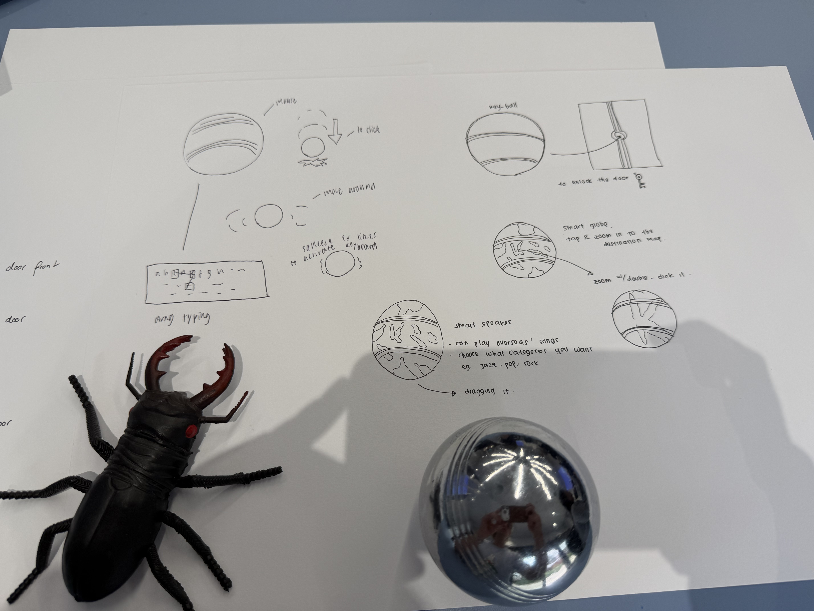
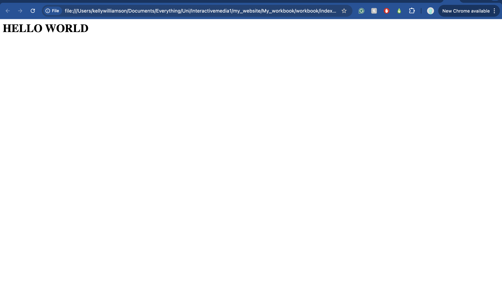
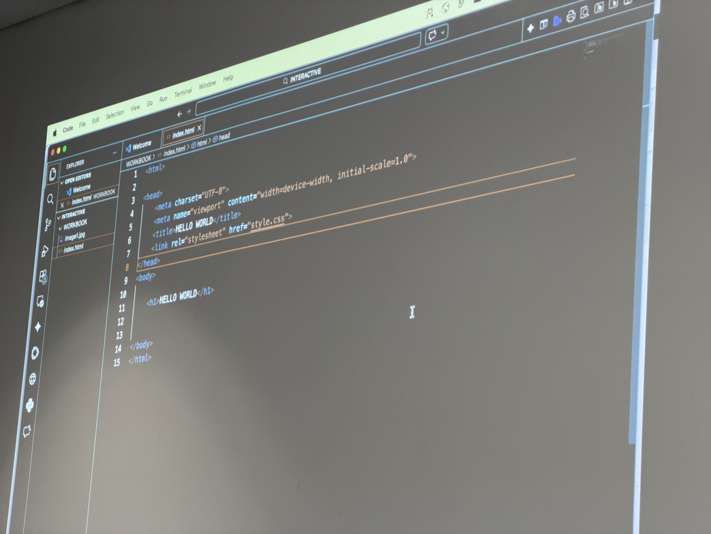
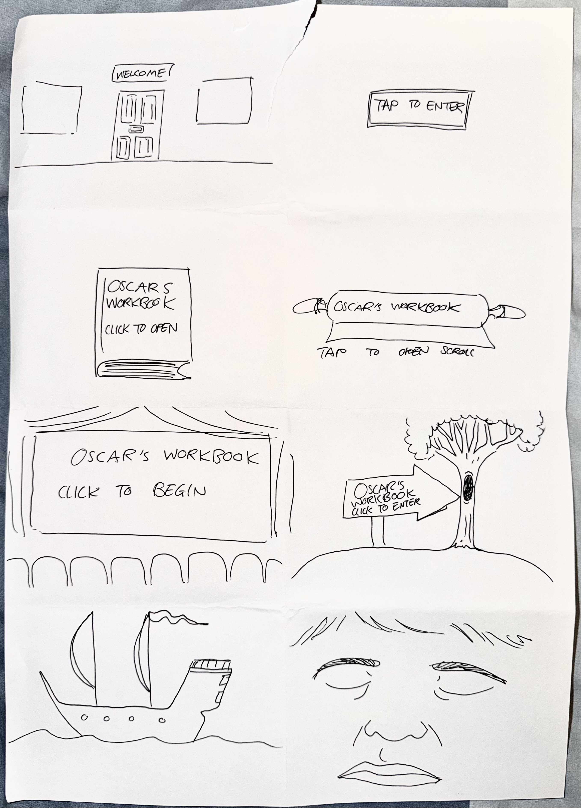
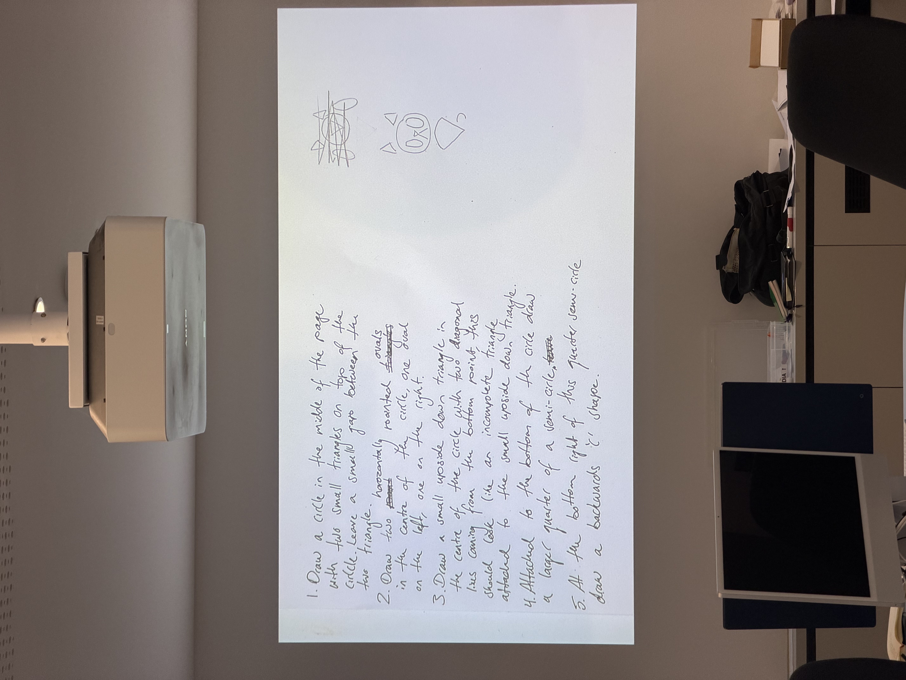

For this in-class activity, we were put into groups of three and given two objects that we were to assign new functions to. The function could be absolutely anything, and did not have to relate to the object. Our objects included a rubber beetle and a silver bocce ball. The above illustrations depict our ideas with notations describing the functionalities of these now interactive objects. We decided that the beetle could be a car key fob. For the bocci ball, we had a range of ideas such as a smart speaker, a light bulb and a house key.


This was my first time coding in HTML. We all produced a blank webpage with the words “Hello world.”
Over the course of 12 hours in one day, we had to list all of the ways we interacted with technology. Here is my list:
1. Open phone to scroll through instagram
2. Twist knob on microwave to defrost blueberries
3. Press button on coffee machine
4. Tap phone to open Spotify
5. Plug amplifier AUX cord into phone
6. Press button to turn on amplifier
7. Twist knob on amplifier to adjust volume
8. Press button to turn amplifier off
9. Un-plug amplifier AUX cord from phone
10. Press button to turn on electric tooth brush
11. Press button to turn off electric tooth brush
12. Press button to flush toilet
13. Twist locking mechanism of back door
14. Rotate bike lock numbers to align 4 digit code to unlock
15. Push pedals of bicycle
16. Push gear levers of bicycle
17. Squeeze brake levers on bicycle
18. Push sliding button on bike lock to close the lock
19. Randomise bike lock numbers to lock
20. Open fitness app to use digital pass for gym access
21. Swipe digital pass at the gym
22. Swipe physical card to lock gym locker
23. Place AirPods in ears to turn on
24. Open Spotify to play music
25. Adjust weights on selected gym machines
26. Hold button to release water from drink fountain to consume water
27. Push lever on water tap to wash my hands
28. Hold hand under drier to dry my hands
29. Swipe physical card to unlock gym locker
30. Walk in front of exit door to active automated opening mechanism
31. Rotate bike lock numbers to align 4 digit code to unlock
32. Push pedals of bicycle
33. Push gear levers of bicycle
34. Squeeze brake levers on bicycle
35. Type 4 digit code into bike door to unlock
36. Push sliding button on bike lock to close the lock
37. Randomise bike lock numbers to lock
38. Use key to unlock backyard sliding door
39. Push tap lever to fill up water bottle
40. Open phone and scroll through instagram
41. Open laptop to read emails and do uni work

This activity was to initiate idea development for how our websites might look and feel. We were given the following instructions:
1. Take a piece of A3 paper.
2. Fold the sheet in half, then half again, then half again until you have 8 rectangles when you open it back up.
3. Get a 1-minute timer (your phone is fine)
4. Start the timer, you have ONE MINUTE to sketch up what your 'Workbook' could look like as a web page (at least the landing page)
Above is an image of my crazy 8's. Each of the drawings, divided into eight panels, represents an idea for my website's homepage. Using metaphors was initially challenging, but quickly became fun as I brainstormed quirky and unique representations for my website's landing page.

In the aim of highlighting the precise act of drafting instruction, we were tasked with creating a simple drawing using geometric shapes and then writing, in less than six steps, how to draw our shape creation. The instruction could not include general commands such as “draw a cat” but rather stipulate the individual steps necessary in creating this image. This was also a great indication of how computers follow instructions, quickly revealing how careful we need to be in our coding. The image above depicts my instructions for drawing a cat, accompanied by a cat drawing produced by my classmate’s interpretation of my procedure.